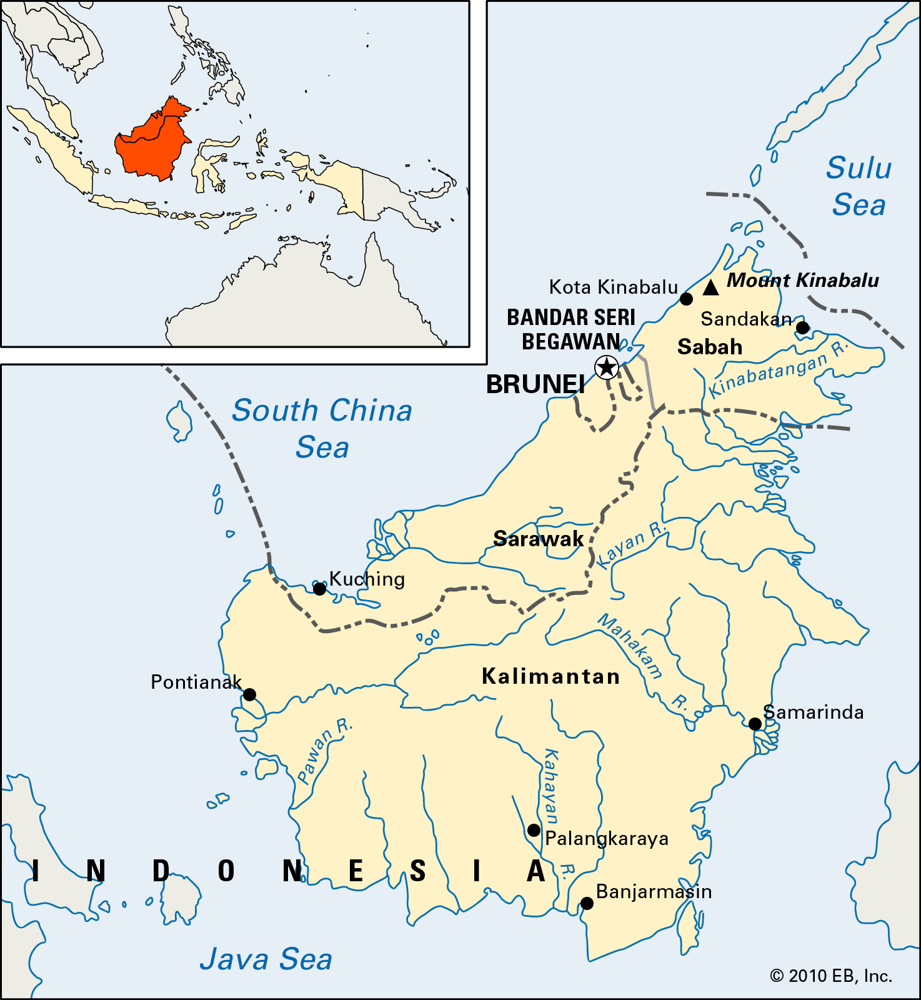

Orangutans are great apes native to the rainforests of Indonesia and Malaysia. They are now found only in parts of Borneo and Sumatra, but during the Pleistocene they ranged throughout Southeast Asia and South China. Classified in the genus Pongo, orangutans were originally considered to be one species.
There are 3 species of orangutan.
Orangutans are the heaviest tree-dwelling animal.
They've got long arms.
They don't mind eating with their feet.
They learn everything they need to know from mum.
Orangutans are found only in the rain forests of the Southeast Asian islands of Borneo and Sumatra. They spend nearly their entire lives in trees—swinging in tree tops and building nests for sleep.
